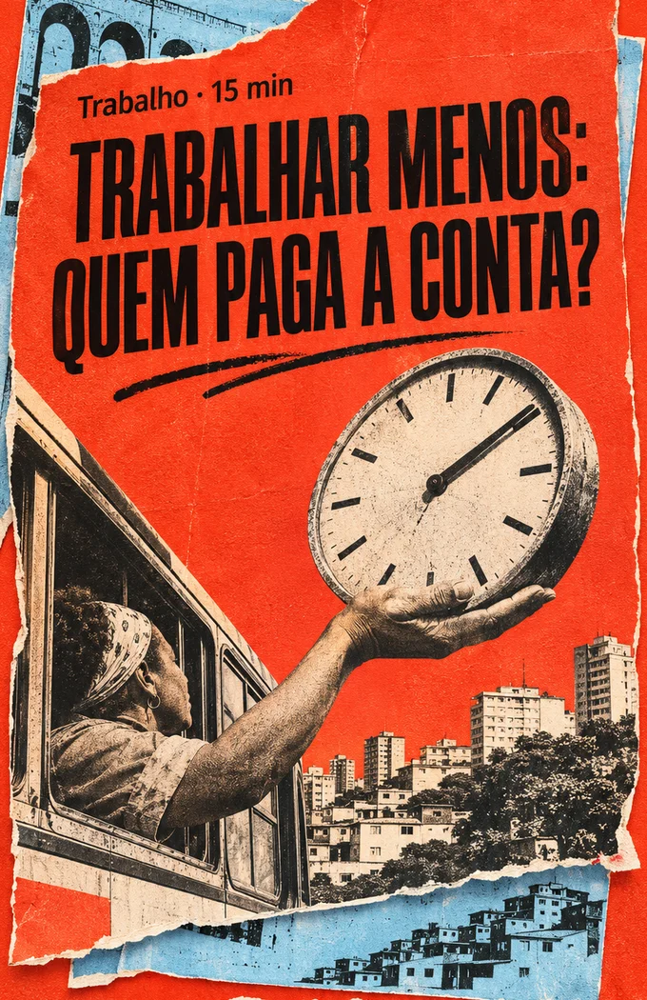
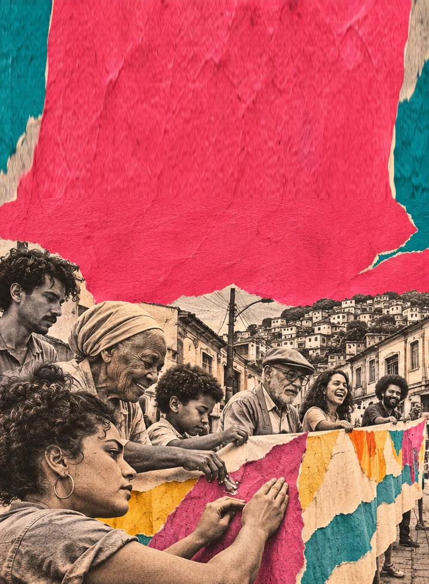

Em cartaz
Cursos gratuitos sobre temas que dividem opiniões.

Abrir curso→

Mobilidade · 10 minÔnibus de graça:Quem pagaa passagem?
Abrir curso→

Sociedade · 26 minQuem cabena sigla?
Abrir curso→
Economia · 15 minGastar maisou cortar?
Abrir curso→
Educação · 14 minCotas na universidadeDeram certo?
Abrir curso→

Alimentação · 12 minO planetano seu prato
Abrir curso→
História · 25 min1964Por que ainda divide?
Abrir curso→
Deslize os cartazesVer os 22 cursos ↓
Todos os cursos
22 cursos
Trabalhar menos: quem paga a conta?→
Mobilidade · 10 minÔnibus de graça:Quem pagaa passagem?
Ônibus de graça: quem paga a passagem?→
Sociedade · 26 minQuem cabena sigla?
Quem cabe na sigla?→
Economia · 15 minGastar maisou cortar?
Gastos, dívida e juros: por que o governo não pode só gastar mais, nem só cortar?→
Educação · 14 minCotas na universidadeDeram certo?
Cotas na universidade: deram certo?→
Alimentação · 12 minO planetano seu prato
Comer carne destrói o planeta? O agro, o boi e o seu prato→
História · 25 min1964Por que ainda divide?
1964: por que o Brasil ainda briga por causa da ditadura?→
Política · 40 minComunista, fascista,liberal: quala diferença?
Comunista, fascista, liberal: você sabe o que cada um significa?→
Economia · 18 minPrivatizarmelhora o serviço?
Privatizar: o serviço melhora ou piora?→
Sociedade · 10 minQuem chegamuda o país?
Imigrantes: tiram empregos ou fazem o país crescer?→

Tecnologia · 12 minQuem regulaas redes?
Fato ou mito: o que mudou nas regras das redes sociais?→
Renda · 15 minTira da pobrezaou acomoda?
Bolsa Família: tira da pobreza ou acomoda?→
História · 25 minIsrael e PalestinaUm século de conflito
Israel e Palestina: por que esse conflito já dura mais de 100 anos?→
História · 12 minRússia e UcrâniaPor que a guerra?
Rússia e Ucrânia: por que essa guerra começou e por que é tão difícil de acabar?→
História · 12 minNazismo eHolocausto
Nazismo e Holocausto: como pessoas comuns deixaram isso acontecer?→
Legislação · 20 minDrogas na leiQuem decide?
Drogas na lei: por que alguns países legalizaram e o Brasil não?→

Legislação · 12 minAborto na leiComo o mundo decide?
Aborto na lei: como o mundo decidiu e onde o Brasil está?→
Política · 10 minNo Brasil, quemresolve o quê?
Quem resolve o quê no Brasil: prefeito, governador, Congresso ou STF?→
Eleições · 14 minDá para confiarna urna?
Fato ou mito: a urna eletrônica é confiável?→
Sociedade · 15 minO que funcionacontra o crime?
Segurança pública: o que funciona contra o crime?→

Legislação · 12 minPunir aos 16reduz o crime?
Maioridade penal: punir aos 16 reduz o crime?→
Legislação · 15 minO mundo armouou desarmou?
Armas na lei: o mundo armou ou desarmou?→